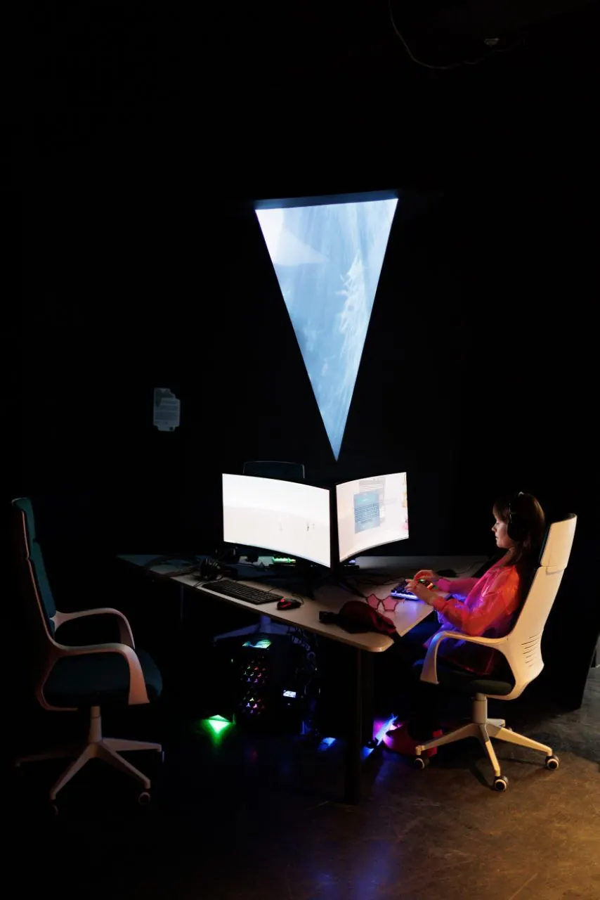
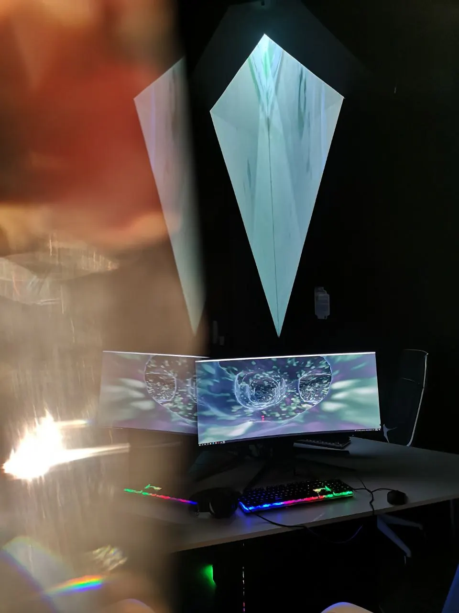
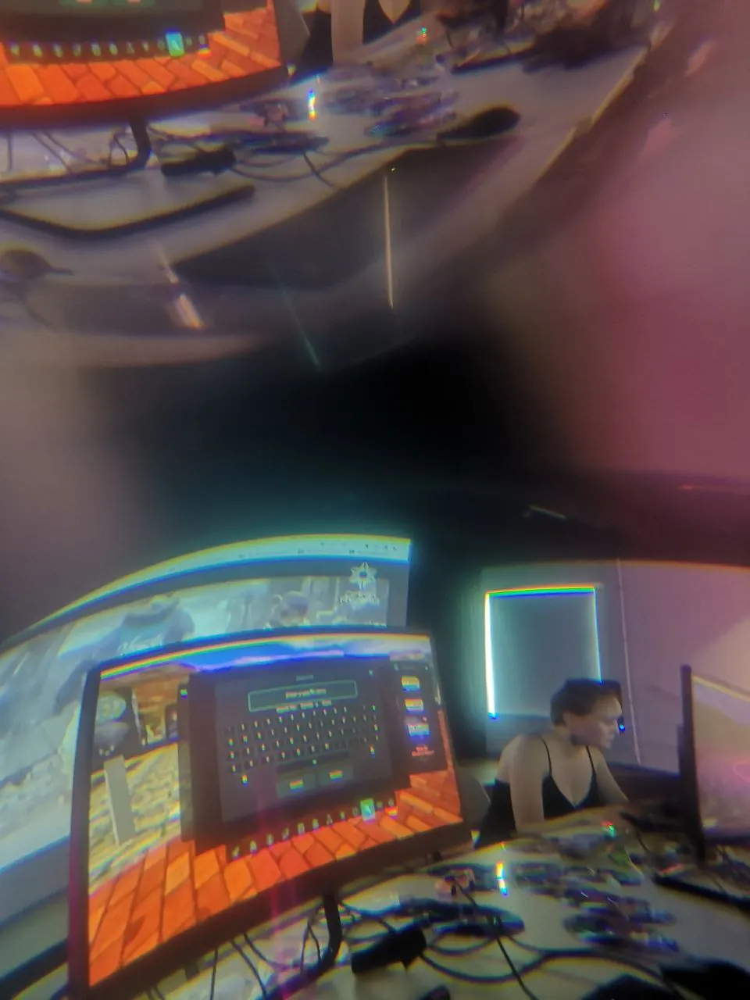
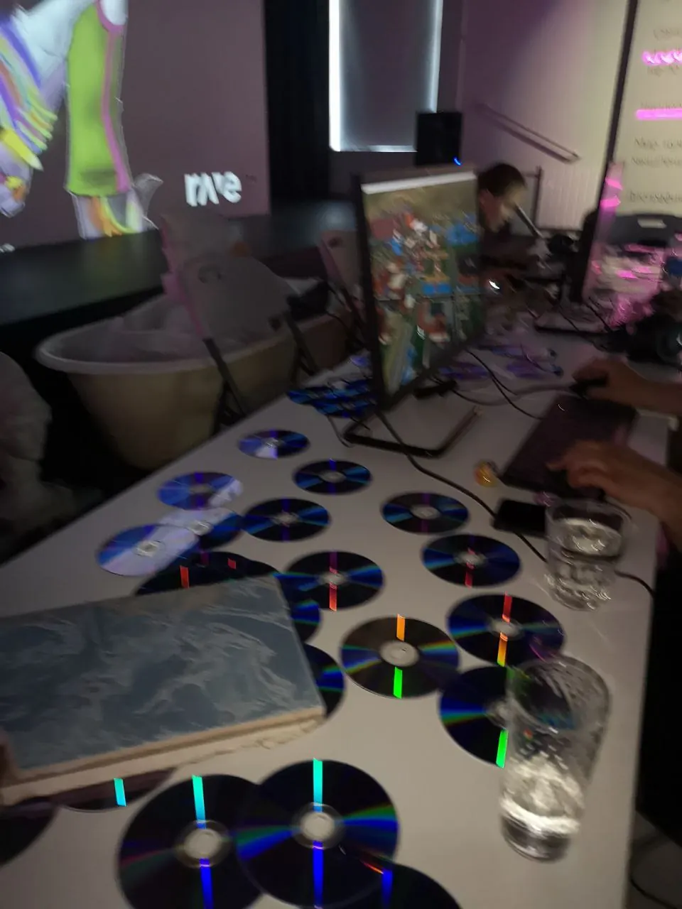

Haunting on the Metaverse
About the project
The idea of Metaverses has been around for nearly three decades, but in recent years it has been discussed as a new form of internet communication. However, it remains uncertain whether the utopian visions of a decentralized self-organized virtual space are anything more than a business model to reinforce existing corporations. While virtual online platforms strive to improve their immersive technologies and debug user's experience, the control over it in the pro-Metaverse environments is increasingly being vested in the algorithms of centralized management, whether they be programs or trained employees.
In this project, the imperfections of technology in existing and popular virtual platforms are utilized as the main instrument for changing the established and regulated patterns of presence within them. The world for this project is created in VRChat. A map consisting of three spaces is designed to allow for legitimate "breaking" of the interface and degradation of technology performance through glitchy and fractal shaders, which unpredictably influence the viewer's experience of the virtual world from within.
Portals between spaces are arranged chaotically, enabling travel between them in any order, getting stuck in a cyberpunk warehouse space or finding oneself in the room of a teenager whose coming of age coincided with the early days of the Internet, opening research archives in boxes inside the basement, or immersing oneself in the algorithmic evolution of a virtual organism.
Contribution
Project by Daria Ivans
- Unity programming by Oleg Sysoev
- Soundtrack by Polina Orlikova (aka Popo)
- Sound design by Leonid Grishchenko
Rooms
Web 1.0 Room

Room notes
The Web 1.0 room comprises two distinct spaces, namely, the Internet's girl room and the basement area. The textures in the former have been created using KidPix, a child-oriented drawing program from the year 2001, and are designed to resemble the graphic style of the early web. Voxel models and GIFs are also employed to generate the early Internet environment and resemble, for instance, GeoCities page.
The design of the early web pages was quite different from what we can see today. The web design of custom-made pages was based on table structure and filled with links leading to other places on the internet. When you enter a website, you see the "welcome" signs and other signatures that were made by the website's owner, resemble visiting somebody's house. That was an idea behind creating the web 1.0 space in our project – to use the web design patterns of early web to construct the interior architecture for the pro-Metaverse platform. We would like to see this technique not only as a nostalgic reference but as a means of complex and unexpected world-building, where internal connections between worlds and exploratory archives are established.
In the basement space, we have arranged several such external and internal archives (on are.na, Tumblr, and worlds in VRC), which are the result of theoretical and practical research in virtual worlds. The transportation between different platforms and the limitless structure of the world are important to us as a technique for transversal world-building within the pro-Metaverse.


Warehouse Room

Room notes
The space, as a whole, bears a resemblance to abandoned warehouse rooms, replete with enigmatic and, indeed, suspenseful objects dispersed throughout. The effect of abandonment and passive brokenness of the rooms create a sense of liminality that corresponds to specific internet cultures such as weirdcore and oddcore. Of particular note is one of the subspaces which creates the illusion of an infinitely repeating corridor, leading to the same room, in which the glitch effect becomes increasingly intense with each subsequent traversal. This technique, in many ways, is reminiscent of the application used in the Ooga Booga 2.0 virtual world by TheZiver. However, the glitch shader employed in our design has been meticulously selected and subjected to exhaustive discussion, duly accounting for the unique peculiarities of our virtual realm. Notably, as users venture further down the corridor and into the room, the glitch effect progressively compromises both vision and control within VRChat. Furthermore, it must be emphasized that the manifestation of this effect varies subtly among individual users, depending on the specific configuration of their avatar and computer system. In this particular environment, the sense of immersion is such that one's agency and spatial logic are relinquished, leaving them at the mercy of the underlying technological infrastructure.
The second sub-environment, accessible via a portal, features an interactive camera. Through the implementation of a kaleidoscopic/glitchy shader, the displayed imagery is subject to distortions that are then projected onto the virtual room's wall, providing a brief opportunity to capture anomalies in the static. Notably, the portal embedded within the image serves as a gateway to the next spatial domain, situated in the realm of Web 1.0.


Organic Space
Room notes
Upon entering the world, the user is first introduced to an amorphous and abstract space, which bears a striking resemblance to internal organs or a rudimentary living organism. This space is characterized by its enveloping and slippery nature, with its partially filled water and dynamic fractal objects serving to create an atmosphere of non-human habitation in the virtual realm. Concurrently, the user experiences a sense of being in a secure and comforting space, reminiscent of a womb, while also feeling a sense of being in an unexplored and extraterrestrial closed organ that has (or not) yet to be claimed.


Installation view







